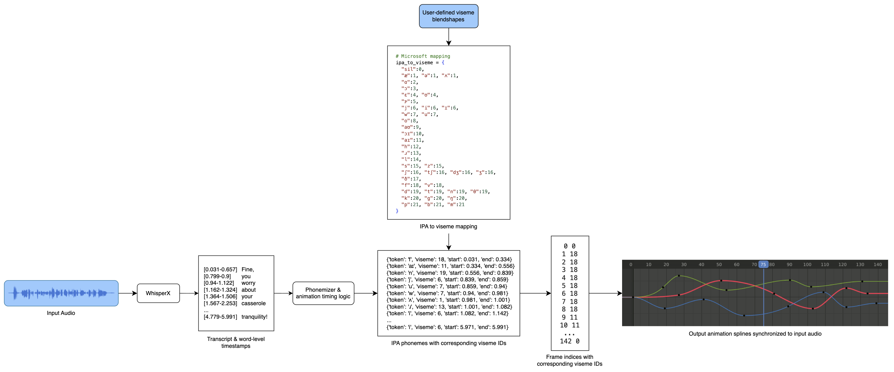

Auto Lip Sync Blender Add-on
Python / Blender API / WhisperX / Phonemizer / Google Colab / Facial Rigging
Check out the GitHub repository and wiki!
Animating lip sync is a repetitive and time-consuming process in character animation. To animate dialogue, animators manually place and adjust mouth poses by ear to match the audio.
Inspired by observations of lip sync animation workflows in Blender, I've been developing an add-on that generates editable lip sync keyframes for pose-based rigs using English audio. The tool is designed to reduce time spent on manual blocking, letting animators spend more time on acting choices and refinement while maintaining full creative control over their animation.
By utilizing WhisperX for automatic speech recognition, Wav2Vec2 for forced alignment, and Phonemizer with eSpeak NG for transcript-to-phoneme conversion, the add-on can process dialogue directly from audio and keyframe corresponding mouth poses as they occur.
Here's a showcase of my latest release, featuring Blender Studio's Storm Rig available through studio.blender.org. I also made a tutorial video for beta testers.
When generating lip sync, Auto Lip Sync creates a transcript of the dialogue, converts the transcript into phonemes, and maps the detected phonemes to visemes. It then uses the configured viseme-to-mouth pose mapping to keyframe the corresponding pose assets to the rig at appropriate points in the audio.

Special thanks to Kurt Fleischer for providing feedback throughout the add-on's early stages, along with everyone I've shown the project to who has shared ideas for improvements and new features. My approach was also influenced by Blizzard's paper, "Simplifying Facial Animation using Deep Learning based Phoneme Recognition," and Blender Studio's Storm rig was immensely helpful during testing.